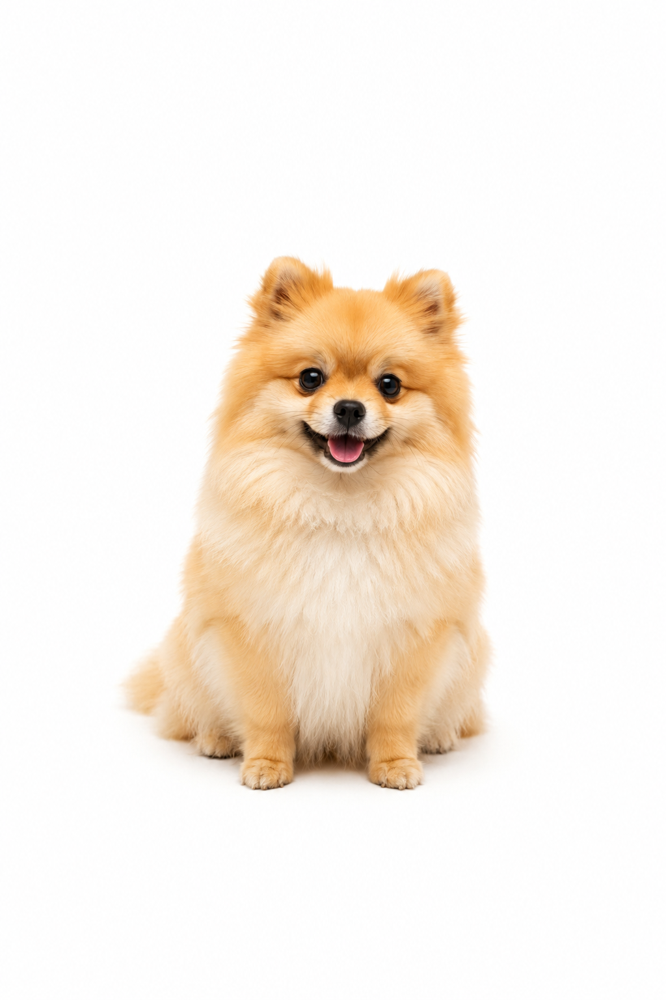

ペットドライヤー
犬用ペットドライヤー5商品を比較
「ポメでは？」「柴犬では？」「大型犬なら？」公開されている飼い主体験を犬種・毛質・性格別に調査しました。
ポメラニアンコーギー柴犬ラブラドールダブルコート
うちの子に近い体験を見る →飼い主たちの「実際どうだった？」を集めました。
犬種・サイズ・毛質・性格から、
うちの子に近い体験を探せます。
同じ犬用品でも、犬の大きさや毛質によって使い心地は変わります。

小型犬チワワ・ポメ・トイプーなど 中型犬柴犬・コーギーなど
中型犬柴犬・コーギーなど 大型犬ゴールデン・大型ミックスなど
大型犬ゴールデン・大型ミックスなど商品スペックだけでは分からない、実際の飼い主体験まで調べます。
「ポメでは？」「柴犬では？」「大型犬なら？」公開されている飼い主体験を犬種・毛質・性格別に調査しました。
犬用品みんなの体験記では、メーカーの製品仕様とネット上で公開されている飼い主の体験情報を調査。
犬種・サイズ・毛質・年齢・性格など、「どんな犬が使ったのか」まで分かる情報を大切にしています。